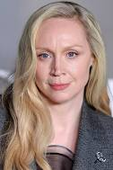
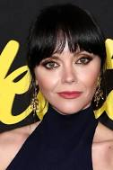

.jpg)
Wednesday is an American supernatural mystery comedy[2] television series based on the character Wednesday Addams by Charles Addams. Created by Alfred Gough and Miles Millar, it stars Jenna Ortega as the titular character, with Gwendoline Christie, Riki Lindhome, Jamie McShane, Hunter Doohan, Percy Hynes White, Emma Myers, Joy Sunday, Georgie Farmer, Naomi J. Ogawa, Christina Ricci, and Moosa Mostafa appearing in supporting roles. Four out of the eight episodes of the first season were directed by Tim Burton, who also was executive producer. The first season revolves around Wednesday Addams, who attempts to solve a murder mystery at her new school.[3] Burton was previously approached to direct the 1991 film The Addams Family and was later involved in a canceled stop-motion animated film featuring the Addams Family. In October 2020, he was reported to be helming a television series, which was later given a series order by Netflix. Ortega was cast in part to represent the character's Latina heritage. Ricci, who had played Wednesday in the 1991 film and its 1993 sequel Addams Family Values, was asked by Burton to join the series in a supporting role. Filming took place in Romania between September 2021 and March 2022. Wednesday premiered on November 16, 2022, and was released on Netflix on November 23 to positive reviews from critics; Ortega's performance received critical acclaim.[4] Within three weeks of release, it became the second-most watched English-language Netflix series. It received two Golden Globe nominations: Best Television Series – Musical or Comedy and Best Actress – Television Series Musical or Comedy for Ortega. It also won four Primetime Emmy Awards, while receiving nominations for Outstanding Comedy Series and Outstanding Lead Actress in a Comedy Series for Ortega. In January 2023, the series was renewed for a second season, which premiered on August 6, 2025; the second half is expected to be released on September 3. In July 2025, the series was renewed for a third season. Premise Wednesday Addams is expelled from her school after dumping live piranhas into the school's pool in retaliation for the boys' water polo team bullying her brother Pugsley. Consequently, her parents Gomez and Morticia Addams transfer her to their high school alma mater Nevermore Academy, a private school for monstrous outcasts, in the town of Jericho, Vermont. Wednesday's cold, emotionless personality and her defiant nature make it difficult for her to connect with her schoolmates and cause her to run afoul of the school's principal Larissa Weems. However, she discovers she has inherited her mother's psychic abilities, which allow her to solve a local murder mystery. In the second season, Wednesday returns to Nevermore and while developing her psychic abilities she must face a new tormentor and prevent her roommate's death. In addition, Pugsley enrolls at Nevermore as Weems' successor Barry Dort wants Morticia to take on a fundraising role.
|
 |
 |
||||
| Jenna Ortega | Emma Myers | Issac ordonez | Gwendoline Christie | Christina Ricci | Hunter Doohan | Percy Hynes White |